វត្ថុបំណង
- កំណត់ប្លង់កូអរដោនេ
- រកកូអរដោនេនៃចំណុចនិងដៅចំណុចដោយស្គាល់កូអរដោនេ
- សង់ក្រាបនៃបន្ទាត់បានត្រឹមត្រូវ ។
1. ប្លង់កូអរដោនេ
1.1. សញ្ញាណកូអរដោនេ
គេមានកន្លះបន្ទាត់ \(\displaystyle Ox\) ដែល \(\displaystyle OI\) ជាប្រវែងឯកតា គេអាចស្គាល់ទីតាំងនៃចំណុច \(\displaystyle A\) នៅលើកន្លះបន្ទាត់ \(\displaystyle Ox\) បានយ៉ាងច្បាស់ បើគេប្រាប់ប្រវែង \(\displaystyle OA\) ។ ផ្ទុយទៅវិញ បើគេប្រាប់ប្រវែង \(\displaystyle OA\) នោះគេអាចដៅចំណុច \(\displaystyle A\) បាន ។
1.2. កូអរដោនេនៃចំណុចមួយក្នុងប្លង់
ឧទាហរណ៍ 1 ៖ នៅក្នុងប្លង់ \(\displaystyle P\) គេគូសអ័ក្ស \(\displaystyle x'Ox\) និង \(\displaystyle y'Oy\) កែងគ្នាត្រង់ \(\displaystyle O\) ។
- អ័ក្សដេក \(\displaystyle x'Ox\) មានទិសដៅពីឆ្វេងទៅស្តាំ ហៅថា អ័ក្សអាប់ស៊ីស ។
- អ័ក្សឈរ \(\displaystyle y'Oy\) មានទិសដៅពីក្រោមទៅលើ ហៅថា អ័ក្សអរដោនេ ។
- ចំណុចប្រសព្វ \(\displaystyle O\) ជាគល់រួមនៃអ័ក្សទាំងពីរ ។
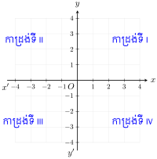
ឧទាហរណ៍ 2 ៖ នៅលើអ័ក្ស \(\displaystyle x'Ox\) យកចំណុច \(\displaystyle A(4)\) និងនៅលើអ័ក្ស \(\displaystyle y'Oy\) យកចំណុច \(\displaystyle B(3)\) ។
នៅលើអ័ក្ស \(\displaystyle Ox\) ត្រង់ចំណុច \(\displaystyle x = 4\) គេគូសបន្ទាត់ស្របនឹងអ័ក្ស \(\displaystyle Oy\) ។
នៅលើអ័ក្ស \(\displaystyle Oy\) ត្រង់ចំណុច \(\displaystyle y = 3\) គេគូសបន្ទាត់ស្របនឹងអ័ក្ស \(\displaystyle x'Ox\) ។ បន្ទាត់ទាំងពីរកាត់គ្នាត្រង់ចំណុច \(\displaystyle P\) ។
គេថាចំណុច \(\displaystyle P\) មានកូអរដោនេ \(\displaystyle (4, 3)\) ។
គេសរសេរ \(\displaystyle P(4, 3)\) មានន័យថាចំណុច \(\displaystyle P\) មានអាប់ស៊ីស 4 និងអរដោនេ 3 ។
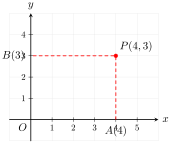
ឧទាហរណ៍ 3 ៖ តើចំណុច \(\displaystyle A(1, 4)\), \(\displaystyle B(6, 1)\), \(\displaystyle C(2, 2)\), \(\displaystyle D(3, 5)\), \(\displaystyle E(6, 3)\), \(\displaystyle F(4, 2)\) ឋិតនៅលើផ្ទៃដី ឬនៅក្នុងសមុទ្រ ?
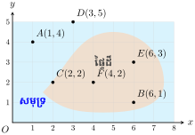
គេបាន \(\displaystyle C, E, F\) នៅលើផ្ទៃដី ។
\(\displaystyle A, B, D\) នៅលើផ្ទៃសមុទ្រ ។
ឧទាហរណ៍ 4 ៖ គេដៅចំណុច \(\displaystyle A(-2, 4)\), \(\displaystyle B(3, -3)\) ក្នុងប្លង់កូអរដោនេ ។ គេបានរូបដូចខាងស្តាំ ។
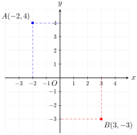
ចំណាំ ៖ នៅក្នុងវង់ក្រចកចំនួនទី 1 នៅលើអ័ក្ស \(\displaystyle x'Ox\) ហើយចំនួនទី 2 នៅលើអ័ក្ស \(\displaystyle y'Oy\) ។ ការរកទីតាំងនៃចំណុចមានន័យថា ដៅចំណុចនៅក្នុងប្លង់កូអរដោនេ ។
ដោយយក \(\displaystyle 1\text{ cm}\) ជារង្វាស់ឯកតានៅលើអ័ក្ស \(\displaystyle x'Ox\) និង \(\displaystyle y'Oy\) ដៅចំណុចដែលមានកូអរដោនេ \(\displaystyle A(3, 4)\), \(\displaystyle B(-2, 5)\), \(\displaystyle C(0, 7)\) ។
តាមបម្រាប់ខាងលើ យើងបានរូបដូចខាងស្តាំនេះ ៖
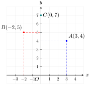
រកកូអរដោនេនៃកំពូលត្រីកោណ \(\displaystyle ABC\) ដោយប្រើបន្ទាត់កែងផ្ទៀងផ្ទាត់ ហើយប្រាប់ប្រភេទត្រីកោណនោះ ។
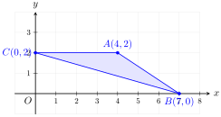
- ចំណុច \(\displaystyle A\) មានកូអរដោនេ \(\displaystyle (4, 2)\) ។
- ចំណុច \(\displaystyle B\) មានកូអរដោនេ \(\displaystyle (7, 0)\) ។
- ចំណុច \(\displaystyle C\) មានកូអរដោនេ \(\displaystyle (0, 2)\) ។
- \(\displaystyle ABC\) ជាត្រីកោណសាមញ្ញ ។
រកកូអរដោនេនៃកំពូលចតុកោណកែង \(\displaystyle ABCD\) (តាមរូបខាងស្តាំ) ។
តាមកំពូលចតុកោណ \(\displaystyle ABCD\) គូសបន្ទាត់ស្របនឹងអ័ក្សទាំងពីរ ។
គេបាន
ដោយយក \(\displaystyle 1\text{ cm}\) ជារង្វាស់ឯកតាលើអ័ក្សទាំងពីរ \(\displaystyle x'Ox\) និង \(\displaystyle y'Oy\) ដៅចំណុចកូអរដោនេដូចតទៅ ៖
- \(\displaystyle A : x = 5, y = 3 \implies A(5, 3)\)
- \(\displaystyle B : x = 2, y = 4 \implies B(2, 4)\)
- \(\displaystyle C : x = -4, y = -2 \implies C(-4, -2)\)
- \(\displaystyle D : x = 0, y = 5 \implies D(0, 5)\)
- \(\displaystyle E : x = 5, y = -3 \implies E(5, -3)\)
- \(\displaystyle F : x = 3, y = 0 \implies F(3, 0)\)
2. ក្រាប
ឧទាហរណ៍ ៖ តារាងខាងក្រោមបង្ហាញពីបម្រែបម្រួលសីតុណ្ហភាពក្នុងតំបន់មួយនៅរដូវត្រជាក់ ។
| រយៈពេល | \(\displaystyle 6\text{ h}\) | \(\displaystyle 8\text{ h}\) | \(\displaystyle 10\text{ h}\) | \(\displaystyle 12\text{ h}\) | \(\displaystyle 14\text{ h}\) | \(\displaystyle 16\text{ h}\) | \(\displaystyle 18\text{ h}\) |
| សីតុណ្ហភាព | \(\displaystyle 2^\circ\text{C}\) | \(\displaystyle 4^\circ\text{C}\) | \(\displaystyle 7^\circ\text{C}\) | \(\displaystyle 5^\circ\text{C}\) | \(\displaystyle 4.5^\circ\text{C}\) | \(\displaystyle 0.5^\circ\text{C}\) | \(\displaystyle -3^\circ\text{C}\) |
នៅលើក្រដាសមីលីម៉ែត្រយើងគូសអ័ក្សអរដោនេ \(\displaystyle x'Ox\) និង \(\displaystyle y'Oy\) កែងគ្នា ។
បើយើងយកឯកតា \(\displaystyle 0.5\text{ cm}\) តាងរយៈពេល \(\displaystyle 1\text{ h}\) នៅលើអ័ក្ស \(\displaystyle x'Ox\) ហើយ \(\displaystyle 0.5\text{ cm}\) តាងមួយអង្សាសេ នៅលើអ័ក្ស \(\displaystyle y'Oy\) ។
ក្រិតអ័ក្ស \(\displaystyle x'Ox\) ចាប់ពីចំណុច \(\displaystyle O\) គិតពីម៉ោង \(\displaystyle 6\text{ h}\) ដល់ម៉ោង \(\displaystyle 18\text{ h}\) ហើយនៅលើអ័ក្ស \(\displaystyle y'Oy\) យកសីតុណ្ហភាពត្រូវគ្នានឹងរយៈពេលនោះ ។
យើងបានទំហំពីរទាក់ទងគ្នាគឺ សីតុណ្ហភាពប្រែប្រួលទៅតាមរយៈពេលមានទាំងអស់ 7 ចំណុច យើងគូសភ្ជាប់ចំណុចទាំងនេះរៀងគ្នាដោយអង្កត់ ។ យើងបានខ្សែកាច់មួយដែលឱ្យរូបភាពយ៉ាងច្បាស់អំពីបម្រែបម្រួលនៃសីតុណ្ហភាព ។
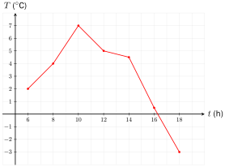
តារាងខាងក្រោមនេះជាលទ្ធផលនៃការអង្កេតវាស់កម្ពស់របស់សិស្សម្នាក់ក្នុងរយៈពេល 10 ឆ្នាំ ។ សង់ក្រាបតាងអាយុនិងកម្ពស់របស់សិស្សខាងលើ ។
| អាយុ (ឆ្នាំ) | 10 | 11 | 12 | 13 | 14 | 15 | 16 | 17 | 18 | 19 |
| កម្ពស់ (ម៉ែត្រ) | 130 | 134 | 138 | 148 | 158 | 166 | 168 | 170 | 172 | 172 |
យើងមានទំហំពីរទាក់ទងគ្នាគឺ អាយុនិងកម្ពស់ដោយយកអ័ក្សអាប់ស៊ីស \(\displaystyle 1\text{ cm}\) សម្រាប់អាយុ 1 ឆ្នាំនិងអ័ក្សអរដោនេ \(\displaystyle 1\text{ cm}\) កម្ពស់ \(\displaystyle 5\text{ cm}\) ហើយគល់ \(\displaystyle O\) ត្រូវគ្នានឹងអាយុ 10 ឆ្នាំនិងកម្ពស់ \(\displaystyle 130\text{ cm}\) នោះគេបានក្រាបដូចរូបខាងស្តាំ ៖
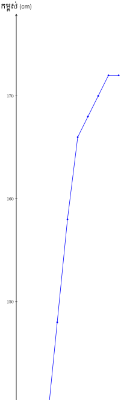
នៅពេលសិក្សា គ្រូបានឱ្យសិស្សមួយក្រុមរង់ចាំវាស់ស្រមោលបង្គោលដងទង់ជាតិក្នុងរយៈពេល 1 ម៉ោងវាស់ម្តង ហើយទទួលបានតារាងលទ្ធផលដូចខាងក្រោម ។ សង់ក្រាបតារាងស្រមោលខាងក្រោម ។
| រយៈពេល (\(\displaystyle t\)) | \(\displaystyle 7\text{ h}\) | \(\displaystyle 8\text{ h}\) | \(\displaystyle 9\text{ h}\) | \(\displaystyle 10\text{ h}\) | \(\displaystyle 11\text{ h}\) | \(\displaystyle 12\text{ h}\) | \(\displaystyle 13\text{ h}\) | \(\displaystyle 14\text{ h}\) | \(\displaystyle 15\text{ h}\) | \(\displaystyle 16\text{ h}\) | \(\displaystyle 17\text{ h}\) |
| ប្រវែងស្រមោល (\(\displaystyle \text{cm}\)) | 216 | 110 | 72 | 46 | 30 | 8 | 20 | 44 | 76 | 110 | 200 |
យើងមានទំហំពីរទាក់ទងគ្នា គឺជាប្រវែងស្រមោលដែលប្រែប្រួលទៅតាមរយៈពេល ។
តាងម៉ោងនៅលើអ័ក្សអាប់ស៊ីស (\(\displaystyle 1\text{ cm}\) ឯកតាសម្រាប់ \(\displaystyle 1\text{ h}\)) ។
តាងប្រវែងស្រមោលនៅលើអ័ក្សអរដោនេ (\(\displaystyle 1\text{ cm}\) ឯកតាសម្រាប់ \(\displaystyle 40\text{ cm}\)) ។
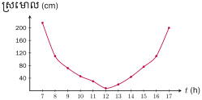
សម្គាល់ ៖ នៅក្នុងចម្លើយតាមក្រាបអាចមានលម្អៀងបន្តិចបន្តួច ។ ដូច្នេះគេអាចប្រើគំនូសតាងក្រាបសម្រាប់ប្រើក្នុងសំណួរផ្សេងៗទៀតដូចជា ខ្សែកោងតាងឱ្យបាតុភូតរូបវិទ្យា (រលាយ កំណក បម្រែបម្រួលអាកាសធាតុ ...) ក្រាបរូបជីវសាស្ត្រ (ខ្សែកោងទម្ងន់ កម្ពស់ក្មេង អ្នកជំងឺ សីតុណ្ហភាព ...) ។
តារាងខាងក្រោមនេះជាបម្រែបម្រួលសីតុណ្ហភាពរបស់អ្នកជំងឺម្នាក់នៅក្នុងមន្ទីរពេទ្យមួយក្នុងរយៈពេល 10 ថ្ងៃ គឺចាប់ពីថ្ងៃទី 1 ដល់ថ្ងៃ 10 ៖
| ថ្ងៃ | 1 | 2 | 3 | 4 | 5 | 6 | 7 | 8 | 9 | 10 |
| សីតុណ្ហភាព | \(\displaystyle 37.4^\circ\) | \(\displaystyle 38.2^\circ\) | \(\displaystyle 39.7^\circ\) | \(\displaystyle 39.8^\circ\) | \(\displaystyle 39.5^\circ\) | \(\displaystyle 39^\circ\) | \(\displaystyle 38^\circ\) | \(\displaystyle 37^\circ\) | \(\displaystyle 37.1^\circ\) | \(\displaystyle 36.8^\circ\) |
គេកំណត់ចំនួនថ្ងៃនៅលើអ័ក្ស \(\displaystyle x'x\) ហើយសីតុណ្ហភាពនៅលើអ័ក្ស \(\displaystyle y'y\) ។
បើគេកំណត់ \(\displaystyle 37^\circ\text{C}\) ជាចំនួន 0 ចំពោះសីតុណ្ហភាពច្រើនជាង \(\displaystyle 37^\circ\text{C}\) កំណត់ដោយចំនួនវិជ្ជមានគឺ \(\displaystyle 1, 2, 3\dots\) ។ គូសក្រាបតាងសីតុណ្ហភាពខាងលើ ។
3. ការសង់ក្រាបនៃបន្ទាត់
នៅក្នុងជីវភាពរស់នៅ ទំនាក់ទំនងរវាងទំហំពីរគេអាចបកស្រាយដោយបន្ទាត់ដូចជាចម្ងាយចរនិងរយៈពេល ។
ឧទាហរណ៍ 1 ៖ ថ្មើរជើងម្នាក់ដើរក្នុងល្បឿន \(\displaystyle 4\text{ km/h}\) ។ បើតាង \(\displaystyle y\) ជាចម្ងាយចរ និង \(\displaystyle x\) ជារយៈពេល នោះគេបានសមីការ \(\displaystyle y = 4x\)
| \(\displaystyle x\) | 0 | 1 | 2 | 3 |
| \(\displaystyle y\) | 0 | 4 | 8 | 12 |
គេដៅចំណុច រួចភ្ជាប់ចំណុចទាំងនេះ គេបានបន្ទាត់ដែលមានរាង \(\displaystyle y = 4x\) គេហៅថា សមីការបន្ទាត់ ។
ឧទាហរណ៍ 2 ៖ សង់ក្រាបនៃសមីការ \(\displaystyle y = 2x\) និង \(\displaystyle y = -2x\) ។
ក្រាបនៃសមីការ \(\displaystyle y = 2x\) គឺ (ករណី \(\displaystyle a > 0\))
| \(\displaystyle x\) | 0 | 1 |
| \(\displaystyle y\) | 0 | 2 |
ក្រាបនៃសមីការ \(\displaystyle y = -2x\) គឺ (ករណី \(\displaystyle a < 0\))
| \(\displaystyle x\) | 0 | -1 |
| \(\displaystyle y\) | 0 | 2 |
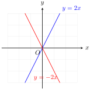
ឧទាហរណ៍ 3 ៖ សង់ក្រាបនៃសមីការ \(\displaystyle y = -2x + 1\) ។
ដើម្បីសង់ក្រាបនៃសមីការខាងលើគេឱ្យតម្លៃ \(\displaystyle x\) រួចគណនាតម្លៃត្រូវគ្នានៃ \(\displaystyle y\) ។
| \(\displaystyle x\) | -1 | 0 | 1 |
| \(\displaystyle y\) | 3 | 1 | -1 |
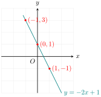
ជាទូទៅ
ដើម្បីសង់ក្រាបនៃសមីការបន្ទាត់ គេឱ្យតម្លៃ \(\displaystyle x\) ដើម្បីរកតម្លៃ \(\displaystyle y\) ដែលត្រូវគ្នា ។
សង់ក្រាបនៃ \(\displaystyle y = x + 3\) ។
គេមានសមីការ \(\displaystyle y = x + 3\) ៖
| \(\displaystyle x\) | 0 | 1 | 2 | 3 |
| \(\displaystyle y\) | 3 | 4 | 5 | 6 |
យកតម្លៃ \(\displaystyle x\) នៅលើអ័ក្សអាប់ស៊ីសនិងតម្លៃ \(\displaystyle y\) នៅលើអ័ក្សអរដោនេ នោះគូចម្លើយនីមួយៗតាងដោយចំណុចមួយ ។ ភ្ជាប់ចំណុចទាំងអស់នោះគេបានក្រាបនៃសមីការ \(\displaystyle y = x + 3\) ។
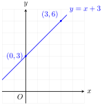
សង់ក្រាបនៃ \(\displaystyle y = -2x + 1\) ។
គេមានសមីការ \(\displaystyle y = -2x + 1\) ៖
| \(\displaystyle x\) | 0 | 1 | 2 | 3 |
| \(\displaystyle y\) | 1 | -1 | -3 | -5 |
យកតម្លៃ \(\displaystyle x\) នៅលើអ័ក្សអាប់ស៊ីសនិងតម្លៃ \(\displaystyle y\) នៅលើអ័ក្សអរដោនេនោះគូចម្លើយនីមួយៗតាងដោយចំណុចមួយ ។ ភ្ជាប់ចំណុចទាំងអស់នោះគេបានក្រាបនៃសមីការ \(\displaystyle y = -2x + 1\) ។
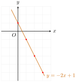
សង់ក្រាបនៃសមីការ \(\displaystyle y = -x + 4\) ។
គេមានសមីការ \(\displaystyle y = -x + 4\) ៖
| \(\displaystyle x\) | 0 | 1 | 2 | 3 |
| \(\displaystyle y\) | 4 | 3 | 2 | 1 |
យកតម្លៃ \(\displaystyle x\) នៅលើអ័ក្សអាប់ស៊ីសនិងតម្លៃ \(\displaystyle y\) នៅលើអ័ក្សអរដោនេ នោះគូចម្លើយនីមួយៗតាងដោយចំណុចមួយ ។ ភ្ជាប់ចំណុចទាំងអស់ នោះគេបានក្រាបនៃសមីការ \(\displaystyle y = -x + 4\) ។
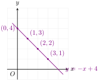
សង់ក្រាបនៃសមីការខាងក្រោម៖
- ក. \(\displaystyle y - x = 5 \iff y = x + 5\)
- ខ. \(\displaystyle y - x = 11 \iff y = x + 11\)
- គ. \(\displaystyle 2x + y = 8 \iff y = -2x + 8\)
- ឃ. \(\displaystyle 3x + 4y = 10 \iff y = -\frac{3}{4}x + \frac{5}{2}\)
- ង. \(\displaystyle x - 3y = -3 \iff y = \frac{1}{3}x + 1\)
- ច. \(\displaystyle -3x + 15y = 9 \iff y = \frac{1}{5}x + \frac{3}{5}\) ។
លំហាត់
ដៅចំណុចដែលមានកូអរដោនេដោយយក \(\displaystyle 1\text{ cm}\) ជារង្វាស់ឯកតាលើអ័ក្សទាំងពីរ \(\displaystyle x'Ox\) និង \(\displaystyle y'Oy\) ដូចតទៅ៖
- ក. \(\displaystyle A : x = 3, y = 5\)
- ខ. \(\displaystyle B : x = -3, y = 4\)
- គ. \(\displaystyle C : x = -4, y = -3\)
- ឃ. \(\displaystyle D : x = 0, y = 6\)
- ង. \(\displaystyle E : x = -5, y = 2\)
- ច. \(\displaystyle F : x = -1, y = -4\)
- ឆ. \(\displaystyle G : x = 2, y = -3\)
- ជ. \(\displaystyle H : x = 3, y = 0\)
- ឈ. \(\displaystyle I : x = \frac{1}{2}, y = 6\)
មើលដំណោះស្រាយ
ដំណោះស្រាយ
កូអរដោនេនៃចំណុចនីមួយៗសរសេរជាគូ \(\displaystyle (x, y)\) ៖- ក. \(\displaystyle A(3, 5)\) ៖ អាប់ស៊ីស \(\displaystyle x = 3\), អរដោនេ \(\displaystyle y = 5\) (ឋិតក្នុងកាដ្រង់ទី I)
- ខ. \(\displaystyle B(-3, 4)\) ៖ អាប់ស៊ីស \(\displaystyle x = -3\), អរដោនេ \(\displaystyle y = 4\) (ឋិតក្នុងកាដ្រង់ទី II)
- គ. \(\displaystyle C(-4, -3)\) ៖ អាប់ស៊ីស \(\displaystyle x = -4\), អរដោនេ \(\displaystyle y = -3\) (ឋិតក្នុងកាដ្រង់ទី III)
- ឃ. \(\displaystyle D(0, 6)\) ៖ អាប់ស៊ីស \(\displaystyle x = 0\), អរដោនេ \(\displaystyle y = 6\) (ឋិតនៅលើអ័ក្សអរដោនេ \(\displaystyle y'y\))
- ង. \(\displaystyle E(-5, 2)\) ៖ អាប់ស៊ីស \(\displaystyle x = -5\), អរដោនេ \(\displaystyle y = 2\) (ឋិតក្នុងកាដ្រង់ទី II)
- ច. \(\displaystyle F(-1, -4)\) ៖ អាប់ស៊ីស \(\displaystyle x = -1\), អរដោនេ \(\displaystyle y = -4\) (ឋិតក្នុងកាដ្រង់ទី III)
- ឆ. \(\displaystyle G(2, -3)\) ៖ អាប់ស៊ីស \(\displaystyle x = 2\), អរដោនេ \(\displaystyle y = -3\) (ឋិតក្នុងកាដ្រង់ទី IV)
- ជ. \(\displaystyle H(3, 0)\) ៖ អាប់ស៊ីស \(\displaystyle x = 3\), អរដោនេ \(\displaystyle y = 0\) (ឋិតនៅលើអ័ក្សអាប់ស៊ីស \(\displaystyle x'x\))
- ឈ. \(\displaystyle I\left(\frac{1}{2}, 6\right)\) ឬ \(\displaystyle I(0.5, 6)\) ៖ អាប់ស៊ីស \(\displaystyle x = 0.5\), អរដោនេ \(\displaystyle y = 6\) (ឋិតក្នុងកាដ្រង់ទី I)
របៀបដៅចំណុច ៖ ចាប់ផ្ដើមពីគល់ \(\displaystyle O(0,0)\) រាប់តាមអ័ក្សដេក \(\displaystyle x\) ទៅតាមសញ្ញា (វិជ្ជមានទៅស្តាំ អវិជ្ជមានទៅឆ្វេង) បន្ទាប់មករាប់តាមអ័ក្សឈរ \(\displaystyle y\) (វិជ្ជមានឡើងលើ អវិជ្ជមានចុះក្រោម) ត្រង់ចំណុចប្រសព្វគឺជាទីតាំងនៃចំណុចនោះ ។
គូសត្រីកោណ \(\displaystyle ABC\) ដែលមានកំពូល \(\displaystyle A(4, 5)\), \(\displaystyle B(8, 2)\) និង \(\displaystyle C(-6, 3)\) ។
មើលដំណោះស្រាយ
ដំណោះស្រាយ
ជំហានទី 1 ៖ ដៅកំពូលទាំងបីក្នុងប្លង់កូអរដោនេ ៖- \(\displaystyle A(4, 5)\) ៖ ទៅស្ដាំ 4 ឯកតា រួចឡើងលើ 5 ឯកតា
- \(\displaystyle B(8, 2)\) ៖ ទៅស្ដាំ 8 ឯកតា រួចឡើងលើ 2 ឯកតា
- \(\displaystyle C(-6, 3)\) ៖ ទៅឆ្វេង 6 ឯកតា រួចឡើងលើ 3 ឯកតា
ជំហានទី 2 ៖ គូសភ្ជាប់អង្កត់ \(\displaystyle AB\), \(\displaystyle BC\), និង \(\displaystyle CA\) ដោយបន្ទាត់ត្រង់ ។ គេបានត្រីកោណ \(\displaystyle ABC\) ។
បញ្ជាក់ប្រវែងជ្រុង ៖\[\begin{aligned} AB &= \sqrt{(8 - 4)^2 + (2 - 5)^2} = \sqrt{4^2 + (-3)^2} = \sqrt{16 + 9} = \sqrt{25} = 5 \\ BC &= \sqrt{(-6 - 8)^2 + (3 - 2)^2} = \sqrt{(-14)^2 + 1^2} = \sqrt{196 + 1} = \sqrt{197} \approx 14.04 \\ AC &= \sqrt{(-6 - 4)^2 + (3 - 5)^2} = \sqrt{(-10)^2 + (-2)^2} = \sqrt{100 + 4} = \sqrt{104} \approx 10.20 \end{aligned}\]ដោយប្រវែងជ្រុងទាំងបីមិនស្មើគ្នា នោះ \(\displaystyle ABC\) ជា ត្រីកោណសាមញ្ញ ។
គូសចតុកោណកែង \(\displaystyle ABCD\) ដែលមានកំពូល \(\displaystyle A(-3, 8)\), \(\displaystyle B(10, 6)\), \(\displaystyle C(5, -5)\) និង \(\displaystyle D(-7, -4)\) ។
មើលដំណោះស្រាយ
ដំណោះស្រាយ
ជំហានទី 1 ៖ ដៅចំណុចកំពូលទាំង 4 ក្នុងតម្រុយកូអរដោនេ ៖- \(\displaystyle A(-3, 8)\) ៖ ឆ្វេង 3, លើ 8
- \(\displaystyle B(10, 6)\) ៖ ស្ដាំ 10, លើ 6
- \(\displaystyle C(5, -5)\) ៖ ស្ដាំ 5, ក្រោម 5
- \(\displaystyle D(-7, -4)\) ៖ ឆ្វេង 7, ក្រោម 4
ជំហានទី 2 ៖ គូសភ្ជាប់អង្កត់ \(\displaystyle AB, BC, CD, DA\) រៀងគ្នាបង្កើតបានចតុកោណ \(\displaystyle ABCD\) ។
ផ្ទៀងផ្ទាត់លក្ខណៈកែង និងប្រវែងជ្រុង ៖- វ៉ិចទ័រ \(\displaystyle \vec{AB} = (10 - (-3), 6 - 8) = (13, -2)\) មានប្រវែង \(\displaystyle AB = \sqrt{13^2 + (-2)^2} = \sqrt{169 + 4} = \sqrt{173}\)
- វ៉ិចទ័រ \(\displaystyle \vec{DC} = (5 - (-7), -5 - (-4)) = (12, -1)\)
ចំណាំ ៖ តាមរូបគំនូរក្នុងសៀវភៅពុម្ព កំពូលទាំងបួនបង្កើតបានរូបរាងចតុកោណមួយក្នុងប្លង់កូអរដោនេ ។
ក្នុងតម្រុយកូអរដោនេយក \(\displaystyle 1\text{ cm}\) ជារង្វាស់ឯកតា ដៅចំណុចដូចតទៅ \(\displaystyle A(0, 5)\), \(\displaystyle B(1, 4)\), \(\displaystyle C(6, 6)\), \(\displaystyle D(3, 0)\) ។ ភ្ជាប់ \(\displaystyle BC\), \(\displaystyle AC\), \(\displaystyle BD\) និង \(\displaystyle AD\) ។ តើអ្នកសង្កេតឃើញយ៉ាងដូចម្តេចចំពោះចំណុចទាំងបួននេះ?
មើលដំណោះស្រាយ
ដំណោះស្រាយ
ជំហានទី 1 ៖ ដៅចំណុច \(\displaystyle A(0, 5), B(1, 4), C(6, 6), D(3, 0)\) លើប្លង់កូអរដោនេ ។
ជំហានទី 2 ៖ គូសភ្ជាប់អង្កត់ \(\displaystyle BC, AC, BD\) និង \(\displaystyle AD\) ។
ការសង្កេត ៖- ពិនិត្យមេគុណប្រាប់ទិសនៃបន្ទាត់ \(\displaystyle (AB)\) ៖ \(\displaystyle m_{AB} = \frac{4 - 5}{1 - 0} = -1\) ។
- បន្ទាត់ \(\displaystyle (AD)\) មានសមីការកាត់តាម \(\displaystyle A(0,5)\) និង \(\displaystyle D(3,0)\) ៖ \(\displaystyle m_{AD} = \frac{0 - 5}{3 - 0} = -\frac{5}{3}\) ។
- បន្ទាត់ \(\displaystyle (BC)\) មានសមីការកាត់តាម \(\displaystyle B(1,4)\) និង \(\displaystyle C(6,6)\) ៖ \(\displaystyle m_{BC} = \frac{6 - 4}{6 - 1} = \frac{2}{5}\) ។
- ពិនិត្យឃើញថា អង្កត់ \(\displaystyle AC\) និង \(\displaystyle BD\) ប្រសព្វគ្នាក្នុងផ្ទៃនៃចតុកោណ \(\displaystyle ABDC\) ។ ចំណុចទាំងបួនមិនរត់ត្រង់ជួរគ្នាទេ តែរួមគ្នាបង្កើតបានជាចតុកោណមួយក្នុងប្លង់ ។
សង់ក្រាបនៃសមីការខាងក្រោម ៖
- ក. \(\displaystyle y - 3x = 5\)
- ខ. \(\displaystyle y - 2x = 4\)
- គ. \(\displaystyle 2x + y = \frac{1}{2}\)
- ឃ. \(\displaystyle 3x + y = 2\)
- ង. \(\displaystyle x - 3 = -3y\)
- ច. \(\displaystyle -3x = 9 - 15y\) ។
មើលដំណោះស្រាយ
ដំណោះស្រាយ
- ក.
\(\displaystyle y - 3x = 5 \iff y = 3x + 5\)
តារាងតម្លៃលេខ ៖\(\displaystyle x\) \(\displaystyle -1\) \(\displaystyle 0\) \(\displaystyle 1\) \(\displaystyle y\) \(\displaystyle 2\) \(\displaystyle 5\) \(\displaystyle 8\) បន្ទាត់កាត់តាមចំណុច \(\displaystyle (-1, 2), (0, 5)\) និង \(\displaystyle (1, 8)\) ។
- ខ.
\(\displaystyle y - 2x = 4 \iff y = 2x + 4\)
តារាងតម្លៃលេខ ៖\(\displaystyle x\) \(\displaystyle -2\) \(\displaystyle 0\) \(\displaystyle 1\) \(\displaystyle y\) \(\displaystyle 0\) \(\displaystyle 4\) \(\displaystyle 6\) បន្ទាត់កាត់តាមចំណុច \(\displaystyle (-2, 0), (0, 4)\) និង \(\displaystyle (1, 6)\) ។
- គ.
\(\displaystyle 2x + y = \frac{1}{2} \iff y = -2x + 0.5\)
តារាងតម្លៃលេខ ៖\(\displaystyle x\) \(\displaystyle -1\) \(\displaystyle 0\) \(\displaystyle 1\) \(\displaystyle y\) \(\displaystyle 2.5\) \(\displaystyle 0.5\) \(\displaystyle -1.5\) បន្ទាត់កាត់តាមចំណុច \(\displaystyle (-1, 2.5), (0, 0.5)\) និង \(\displaystyle (1, -1.5)\) ។
- ឃ.
\(\displaystyle 3x + y = 2 \iff y = -3x + 2\)
តារាងតម្លៃលេខ ៖\(\displaystyle x\) \(\displaystyle 0\) \(\displaystyle 1\) \(\displaystyle 2\) \(\displaystyle y\) \(\displaystyle 2\) \(\displaystyle -1\) \(\displaystyle -4\) បន្ទាត់កាត់តាមចំណុច \(\displaystyle (0, 2), (1, -1)\) និង \(\displaystyle (2, -4)\) ។
- ង.
\(\displaystyle x - 3 = -3y \iff 3y = -x + 3 \iff y = -\frac{1}{3}x + 1\)
តារាងតម្លៃលេខ ៖\(\displaystyle x\) \(\displaystyle -3\) \(\displaystyle 0\) \(\displaystyle 3\) \(\displaystyle y\) \(\displaystyle 2\) \(\displaystyle 1\) \(\displaystyle 0\) បន្ទាត់កាត់តាមចំណុច \(\displaystyle (-3, 2), (0, 1)\) និង \(\displaystyle (3, 0)\) ។
- ច.
\(\displaystyle -3x = 9 - 15y \iff 15y = 3x + 9 \iff y = \frac{1}{5}x + \frac{3}{5}\)
តារាងតម្លៃលេខ ៖\(\displaystyle x\) \(\displaystyle -3\) \(\displaystyle 2\) \(\displaystyle 7\) \(\displaystyle y\) \(\displaystyle 0\) \(\displaystyle 1\) \(\displaystyle 2\) បន្ទាត់កាត់តាមចំណុច \(\displaystyle (-3, 0), (2, 1)\) និង \(\displaystyle (7, 2)\) ។
ដៅបន្ទាត់ដែលមានសមីការ \(\displaystyle y = 2x\), \(\displaystyle y = 2x + 1\), \(\displaystyle y = 2x - 3\) និង \(\displaystyle y = 2x + 2\) នៅក្នុងប្លង់កូអរដោនេតែមួយ ។ ប្រើតម្លៃ \(\displaystyle x\) ពី \(\displaystyle -3\) ដល់ 3 ។ តើអ្នកសង្កេតឃើញយ៉ាងណាសម្រាប់បន្ទាត់ដែលអ្នកបានគូស?
មើលដំណោះស្រាយ
ដំណោះស្រាយ
តារាងតម្លៃលេខចំពោះសមីការនីមួយៗ ៖\(\displaystyle x\) \(\displaystyle -3\) \(\displaystyle -2\) \(\displaystyle -1\) \(\displaystyle 0\) \(\displaystyle 1\) \(\displaystyle 2\) \(\displaystyle 3\) \(\displaystyle y = 2x\) \(\displaystyle -6\) \(\displaystyle -4\) \(\displaystyle -2\) \(\displaystyle 0\) \(\displaystyle 2\) \(\displaystyle 4\) \(\displaystyle 6\) \(\displaystyle y = 2x + 1\) \(\displaystyle -5\) \(\displaystyle -3\) \(\displaystyle -1\) \(\displaystyle 1\) \(\displaystyle 3\) \(\displaystyle 5\) \(\displaystyle 7\) \(\displaystyle y = 2x - 3\) \(\displaystyle -9\) \(\displaystyle -7\) \(\displaystyle -5\) \(\displaystyle -3\) \(\displaystyle -1\) \(\displaystyle 1\) \(\displaystyle 3\) \(\displaystyle y = 2x + 2\) \(\displaystyle -4\) \(\displaystyle -2\) \(\displaystyle 0\) \(\displaystyle 2\) \(\displaystyle 4\) \(\displaystyle 6\) \(\displaystyle 8\) ការសង្កេត ៖
- សមីការទាំងបួនសុទ្ធតែមានមេគុណមុខ \(\displaystyle x\) ស្មើគ្នា គឺមេគុណប្រាប់ទិស \(\displaystyle a = 2\) ។
ដូច្នេះបន្ទាត់ទាំងបួនគឺ ស្របគ្នាទាំងអស់ ក្នុងប្លង់កូអរដោនេ ៖
\[(y = 2x) \parallel (y = 2x + 1) \parallel (y = 2x - 3) \parallel (y = 2x + 2)\]
សមីការបន្ទាត់ខាងក្រោម គូសតារាងតម្លៃលេខពី \(\displaystyle -3, 0\) និង 3 ។ បំពេញតារាងតម្លៃលេខ និងគូសក្រាបក្នុងប្លង់តែមួយ ៖
- ក. \(\displaystyle y = x + 2\)
- ខ. \(\displaystyle y = -x + 2\)
- គ. \(\displaystyle y = x - 2\)
- ឃ. \(\displaystyle y = -x - 2\) ។
មើលដំណោះស្រាយ
ដំណោះស្រាយ
តារាងតម្លៃលេខចំពោះ \(\displaystyle x \in \{-3, 0, 3\}\) ៖សមីការបន្ទាត់ \(\displaystyle x = -3\) \(\displaystyle x = 0\) \(\displaystyle x = 3\) ក. \(\displaystyle y = x + 2\) \(\displaystyle y = -3 + 2 = -1\) \(\displaystyle y = 0 + 2 = 2\) \(\displaystyle y = 3 + 2 = 5\) ខ. \(\displaystyle y = -x + 2\) \(\displaystyle y = -(-3) + 2 = 5\) \(\displaystyle y = 0 + 2 = 2\) \(\displaystyle y = -3 + 2 = -1\) គ. \(\displaystyle y = x - 2\) \(\displaystyle y = -3 - 2 = -5\) \(\displaystyle y = 0 - 2 = -2\) \(\displaystyle y = 3 - 2 = 1\) ឃ. \(\displaystyle y = -x - 2\) \(\displaystyle y = -(-3) - 2 = 1\) \(\displaystyle y = 0 - 2 = -2\) \(\displaystyle y = -3 - 2 = -5\) ការសង្កេតលើក្រាប ៖
- បន្ទាត់ \(\displaystyle y = x + 2\) និង \(\displaystyle y = x - 2\) មានមេគុណប្រាប់ទិស \(\displaystyle a = 1\) ដូចគ្នា \(\displaystyle \implies\) ស្របគ្នា ។
- បន្ទាត់ \(\displaystyle y = -x + 2\) និង \(\displaystyle y = -x - 2\) មានមេគុណប្រាប់ទិស \(\displaystyle a = -1\) ដូចគ្នា \(\displaystyle \implies\) ស្របគ្នា ។
- បន្ទាត់ដែលមានមេគុណប្រាប់ទិស \(\displaystyle a = 1\) និង \(\displaystyle a = -1\) មានផលគុណមេគុណ \(\displaystyle 1 \times (-1) = -1 \implies\) កាត់គ្នាកែងគ្នា ។
- បន្ទាត់ទាំងបួនកាត់គ្នាបង្កើតបានជា ការ៉េ ដែលមានផ្ចិតចំគល់ \(\displaystyle O(0,0)\) និងមានកំពូលត្រង់ \(\displaystyle (0,2), (2,0), (0,-2), (-2,0)\) ។
ខ្លឹមសារ៖ សៀវភៅពុម្ពគណិតវិទ្យាថ្នាក់ទី៨ របស់ក្រសួងអប់រំ យុវជន និងកីឡា · វាយអត្ថបទ គូររូបភាពឡើងវិញ និងរៀបចំលើអនឡាញដោយលោកគ្រូ សាន សុខលី សម្រាប់ការសិក្សាដោយឥតគិតថ្លៃ និងមិនរកប្រាក់ចំណេញ។ មិនមែនជាការបោះពុម្ពផ្លូវការរបស់ក្រសួងទេ។